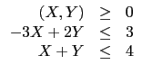
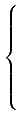
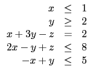
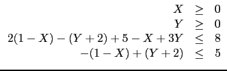
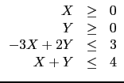

suivant: Écriture matricielle et algorithme
monter: Programmation linéaire
précédent: Programmation linéaire
Table des matières
Index
Cas le plus simple
La fonction
simplex_reduce effectue la réduction par l'algorithme du simplexe pour
trouver :
max(
c.
x) avec
A.
x  b
b,
x 
0,
b 0
 n, b
n, b  0
est un vecteur de
p et
A est une matrice de p lignes et de n colonnes.
0
est un vecteur de
p et
A est une matrice de p lignes et de n colonnes.
simplex_reduce a comme argument A,b,c et
renvoie max(c.x), la solution augmentée de x
et la matrice réduite.
Exemple
Chercher
max(
X + 2
Y) lorsque


simplex_reduce([[-3,2],[1,1]],[3,4],[1,2])
On obtient :
7,[1,3,0,0],[[0,1,1/5,3/5,3],[1,0,(-1)/5,2/5,1], [0,0,1/5,8/5,7]]
Ce qui veut dire que le maximum de X+2Y sous ces conditions
est 7, il est obtenu pour X=1,Y=3
car [1,3,0,0] est la solution augmentée et la matrice
réduite est :
[[0,1,1/5,3/5,3],[1,0,(-1)/5,2/5,1], [0,0,1/5,8/5,7]].
Un cas plus compliqué qui se ramène au cas simple
simplex_reduce oblige à réécrire les contraintes impliquant une
seule variable pour qu'elles soient sous la forme
xk 0, puis à
éliminer les variables sans contraintes puis à ajouter des variables afin
d'avoir comme contraintes : toutes les composantes des
éléments du simplexe sont positives.
Par exemple, si on part du problème :
min(2x + y - z + 4) lorsque 
on pose x = 1 - X, y = Y + 2, z = 5 - X + 3Y
le problème devient
chercher le minimum de
(- 2X + Y - (5 - X + 3Y) + 8) lorsque

donc chercher le minimum de :
(-
X - 2
Y + 3) lorsque


Cas général
Tous les cas ne se ramènent pas directement au cas simple ci-dessus.
On verra plus loin comment les traiter, cela nécessitera d'utiliser
une autre forme d'appel de simplex_reduce, que l'on peut
d'ailleurs aussi utiliser dans le cas simple de la manière
suivante :
si A a p lignes et n colonnes et si on définit :
B:=augment(A,idn(p)); C:=border(B,b);
d:=append(-c,0$(p+1)); D:=augment(C,[d]);
simplex_reduce accepte aussi en argument D.
Pour l'exemple précédent, on tape :
A:=[[-3,2],[1,1]];B:=augment(A,idn(2)); C:=border(B,[3,4]);
D:=augment(C,[[-1,-2,0,0,0]])
On a C=[[-3,2,1,0,3],[1,1,0,1,4]]
et D=[[-3,2,1,0,3],[1,1,0,1,4],[-1,-2,0,0,0]]
On tape :
simplex_reduce(D)
On obtient le même résultat que précédemment.
suivant: Écriture matricielle et algorithme
monter: Programmation linéaire
précédent: Programmation linéaire
Table des matières
Index
Documentation de giac écrite par Renée De Graeve